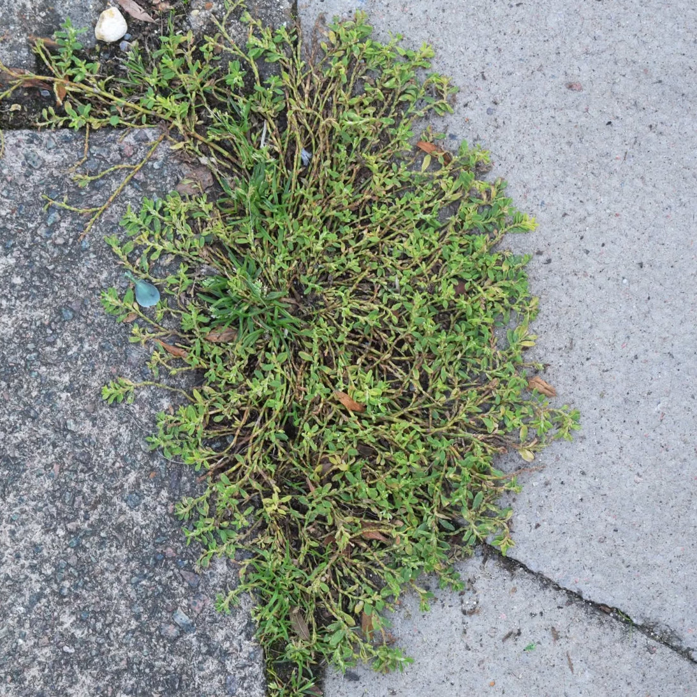
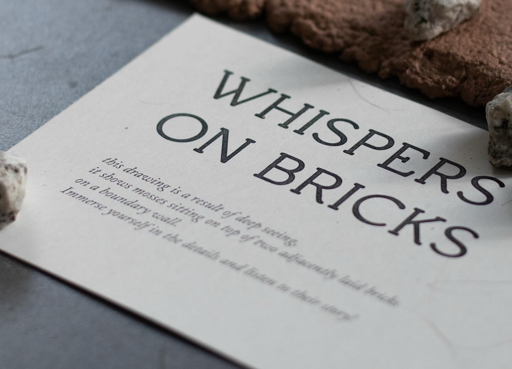
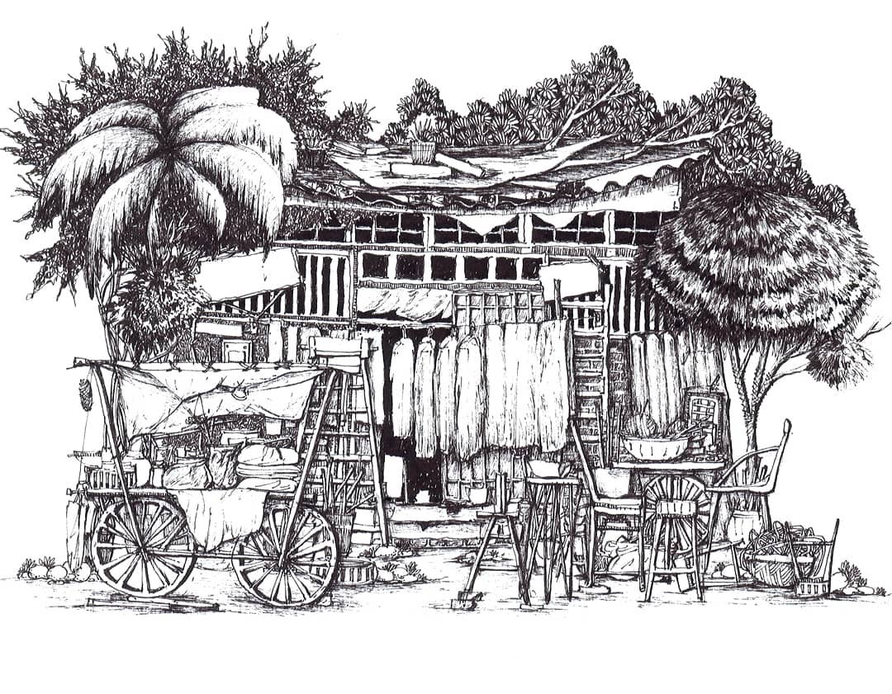
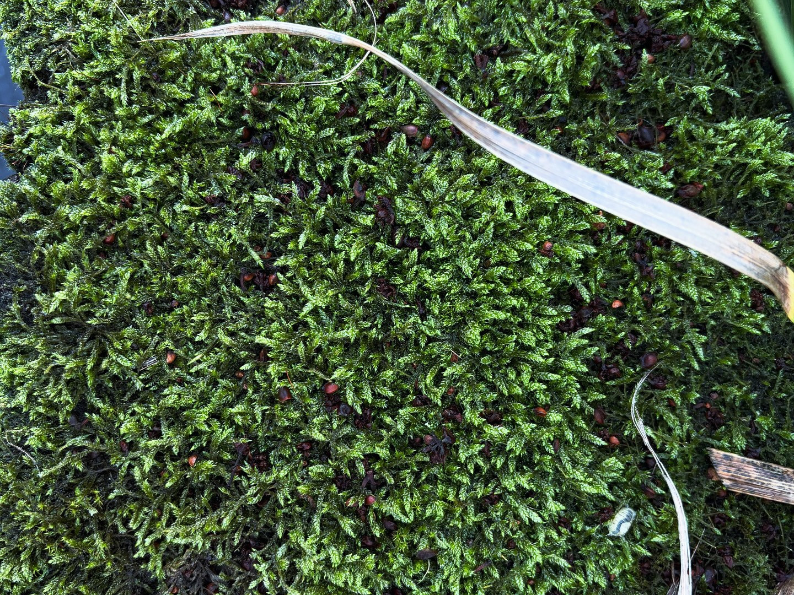
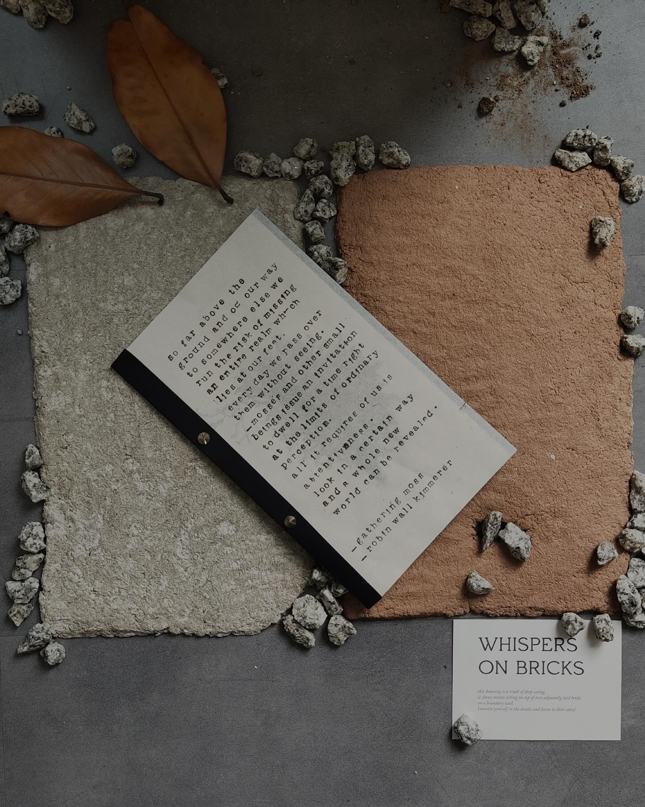
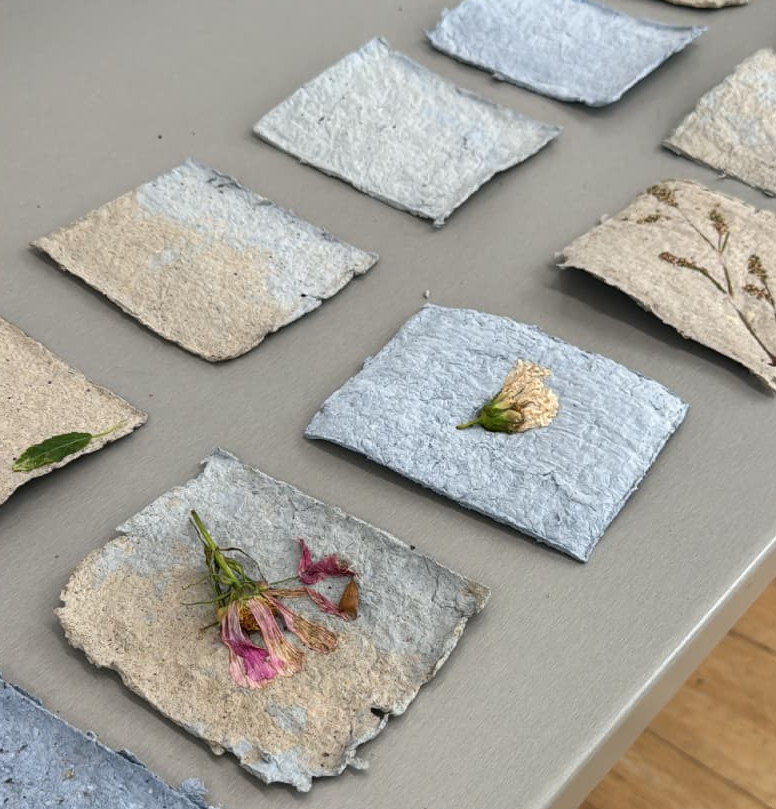

Shubhangi Saxena · drawings in ink
Look down. Between two paving stones, a forest is getting on with its life.


Drag the line, or scroll to go in
Scroll
This one is not a photograph.
It is pen and ink, drawn leaf by leaf.
This is how closely she looks.
She draws the small lives a city walks over.
Shubhangi Saxena is an artist from India, working there and in London under the name Shilp Kalaa. Moss in the joints of brick paving, a plant pushing up through a split slab, a green tuft on the top of a wall: she photographs them from above, then draws them in black ink, mark by mark, until the page is as crowded and as quiet as the moss. Her own name for this is deep seeing.

Whispers on Bricks · 2025
Two bricks on a boundary wall.
That is the whole of it. In the drawing, feathery fronds run thick right up to the joint and stop. Beyond it is bare brick, with a few single cushions keeping their distance.
this drawing is a result of deep seeing, it shows mosses sitting on top of two adjacently laid bricks on a boundary wall. Immerse yourself in the details and listen to their story!
The exhibition text puts the time at “six months of patient observation”. In September 2025 the drawing hung in KaalChakra, a group exhibition by OSA studio, an official partner of London Design Festival 2025, in the Asylum Chapel in London.


Three drawings, 2019 – 2024
Shop with a handcart · 2019Long cloths hang across the front of a low shack. A palm leans in at one end, and a laden handcart, stools and chairs stand out in the street.

A wooded slope where every tree is left as bare paper and everything around it is drawn.

Drawn on a round sheet of paper she made with moss in the pulp. The green flecks in the paper are the moss.
In her words
She wrote a line across each of twelve photographs from a walk. Read in order, they make a set of directions.

dont skip it while you're out for a walkit is echoingembrace it...lets learn to walk with itin some forbidden patternswith some peekaboo encountersnear someone's homedo catch some beautiful glances along the edgewhile making shapes in the skycrinkle with itand when you feel itnature has come alive

I found strong affinity towards observing the wild patches of plant species, found in nobody's land.
Beyond the page
A chapel, a box, a floor, a tub of pulp.






A place of your own, or a room to fill.
Commission a drawing
A wall you pass every morning. The step outside the house you grew up in. Tell her about the place.
Exhibit or collaborate
For curators, galleries and organisers. Her work so far includes ink drawings, floor installations with found materials, the City Mosses box, and paper made with moss.